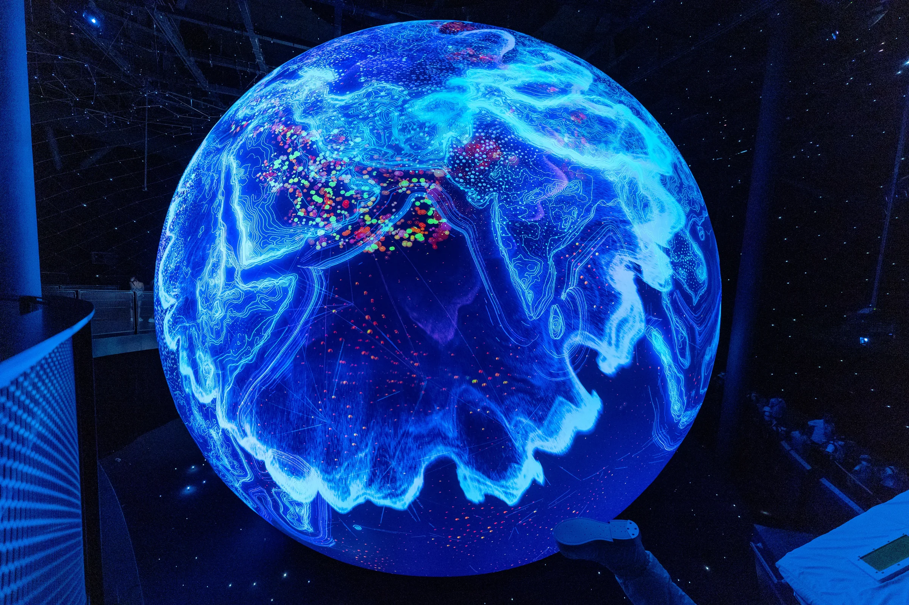

Una ventana al universo
ASTRONOMÍA
PARA TODOS
Descubre el universo y comprende
nuestro lugar en él.
El universo
comienza aquí.
La astronomía empieza con una pregunta. Aquí encontrarás respuestas claras para seguir haciendo muchas más.
Un espacio educativo y divulgativo para acercarnos al universo con imágenes, datos curiosos y explicaciones sencillas. Explora planetas, estrellas, galaxias y fenómenos que despiertan nuestra curiosidad.
Conoce lo que hay allá afuera ↗SIGUIENTE PARADA
La Luna.
La Luna no produce luz propia: vemos la luz del Sol reflejada en su superficie. Su parte iluminada cambia ante nuestros ojos y da lugar a las fases que observamos desde la Tierra.
Su superficie conserva huellas de impactos antiguos.
Las fases dependen de cómo cambia nuestra perspectiva de la parte iluminada.
¿Qué te gustaría
descubrir?
Elige un tema. Cada uno abre una nueva forma de mirar el universo.
Ocho mundos.
Un mismo sol.
Recorre el Sistema Solar y selecciona un planeta para conocerlo un poco mejor.
Elige un mundo
Toca o selecciona un planeta en el diagrama para comenzar tu recorrido.
00 — 08FAROS EN LA OSCURIDAD
Las
estrellas.
Cada punto de luz tiene una historia. Las estrellas nacen en nubes de gas y polvo, evolucionan y devuelven material al espacio al final de sus ciclos.
Nacimiento
Nubes de gas y polvo dan origen a nuevas estrellas.
Evolución
La masa de cada estrella influye en el camino que seguirá.
Transformación
Algunas estrellas dispersan material que podrá formar nuevos astros.
MÁS LEJOS, MÁS GRANDE
Un universo
lleno de galaxias.
Las galaxias reúnen estrellas, gas y polvo bajo la gravedad. Las vemos con formas espirales, elípticas o irregulares: distintas maneras de organizar un universo inmenso.
Brazos curvos alrededor de un centro brillante.
FUENTE: NASA · TIPOS DE GALAXIAS ↗GRAVEDAD EN SU LÍMITE
Cuando la gravedad
lo cambia todo.
Un agujero negro es una región donde la gravedad es tan intensa que, al cruzar su horizonte de sucesos, nada puede escapar. El material que lo rodea puede formar un disco brillante.
FUENTE: NASA · AGUJEROS NEGROS ↗Eventos que
podemos observar.
Hay espectáculos celestes que podemos observar a simple vista. Aprende qué mirar y cómo prepararte.
Las fechas y condiciones de observación dependen del evento y del lugar. Consulta una fuente astronómica actualizada antes de planificar.
EL UNIVERSO DESDE
Bolivia.
Mirar el cielo nocturno desde Bolivia también es una invitación a observar, hacer preguntas y compartir el asombro. El lugar, la hora y las condiciones cambian lo que podemos ver.
Prepara tu próxima observación ↗Aprender también
es explorar.
Ideas y formatos para seguir investigando, en casa, en clase o donde empiece tu curiosidad.
EL FINAL DEL VIAJE ES UN NUEVO COMIENZO